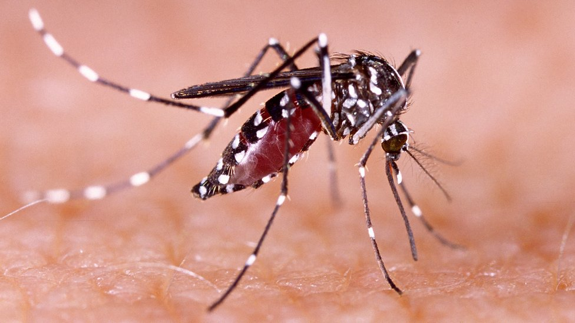
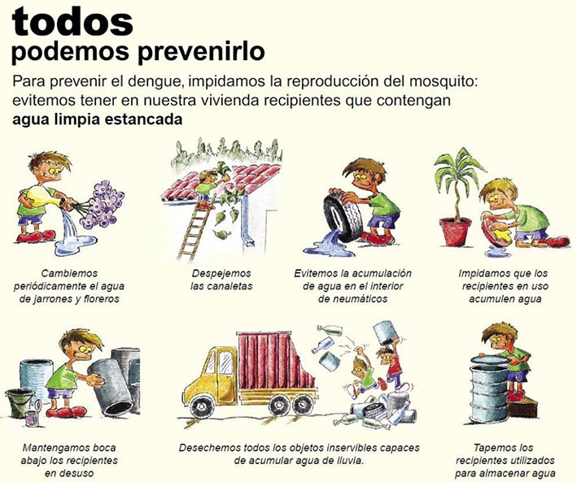

¿Qué es el dengue?
El dengue es una enfermedad viral transmitida por mosquitos, principalmente el mosquito Aedes aegypti. Esta enfermedad puede causar síntomas graves y es una amenaza significativa para la salud pública en muchas regiones tropicales y subtropicales del mundo.
Impacto Educativo
En el ámbito educativo, el dengue puede afectar negativamente el rendimiento académico de los estudiantes. Las campañas de educación y concienciación son fundamentales para reducir la incidencia del dengue y enseñar a las comunidades cómo prevenir la enfermedad.
Impacto Ambiental
El control del dengue tiene un componente ambiental importante. La gestión adecuada de los desechos y la eliminación de criaderos de mosquitos son esenciales para reducir la proliferación del mosquito Aedes aegypti.
Síntomas
- Fiebre alta
- Dolor de cabeza severo
- Dolor detrás de los ojos
- Dolor en las articulaciones y músculos
- Erupción cutánea
Prevención
Para prevenir el dengue, es importante evitar las picaduras de mosquitos:
- Usar repelente de insectos
- Instalar mosquiteros en las ventanas
- Eliminar recipientes que acumulen agua
Tratamiento
No hay un tratamiento específico para el dengue. El manejo de los síntomas incluye:
- Reposo
- Hidratación
- Analgésicos como paracetamol
- Evitar el uso de aspirina
Casos de Dengue
A continuación se presentan los casos reportados de dengue por departamento del Uruguay en el último año:
Para más información, visite el reporte sobre enfermedades transmitidas por Aedes aegypti.
Preguntas Frecuentes
¿Cómo se transmite el dengue?
El dengue se transmite a través de la picadura de mosquitos infectados, principalmente el mosquito Aedes aegypti.
¿Cuál es el periodo de incubación del dengue?
El periodo de incubación del dengue suele ser de 4 a 10 días después de la picadura del mosquito infectado.
¿Puedo vacunarme contra el dengue?
Existen vacunas contra el dengue, pero su uso depende de las recomendaciones médicas y la situación epidemiológica de la zona.